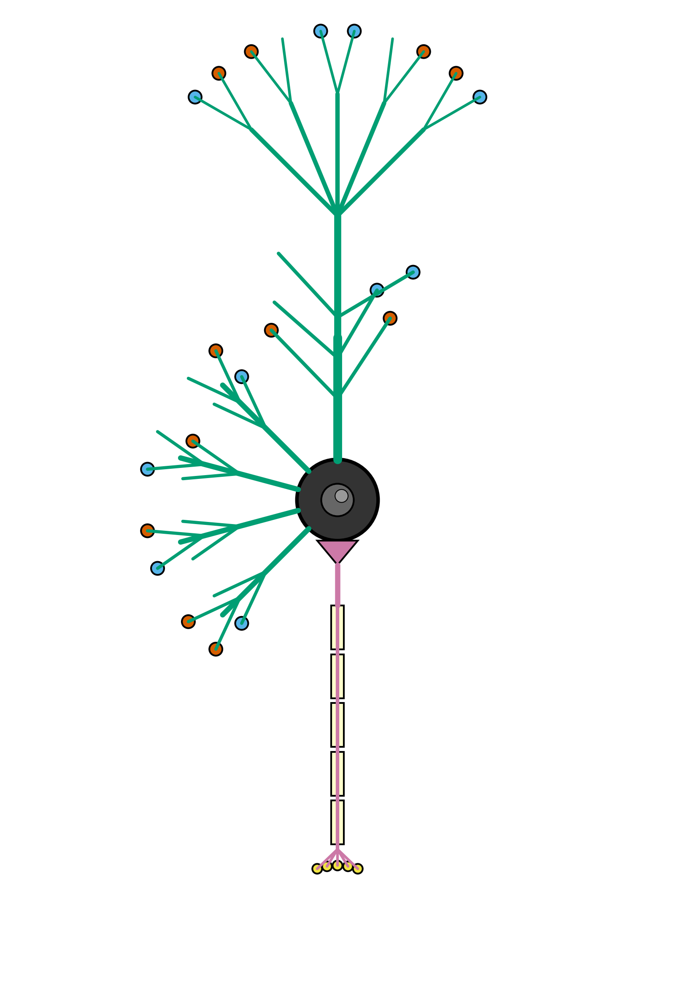

Quick Start Guide#
This guide will help you get started with the Dendritic Modeling Framework quickly.
Installation#
Install the framework using pip:
pip install -e .
Or with development dependencies:
pip install -e ".[dev]"
Basic Example#
Here’s a simple example training a dendritic network on MNIST:
import torch
from torch.utils.data import DataLoader
from torchvision import datasets, transforms
from dendritic_modeling.models import DendriticClassifier
from dendritic_modeling.training import Trainer
# Load MNIST dataset
transform = transforms.Compose([
transforms.ToTensor(),
transforms.Normalize((0.1307,), (0.3081,))
])
train_dataset = datasets.MNIST('./data', train=True, download=True, transform=transform)
test_dataset = datasets.MNIST('./data', train=False, transform=transform)
train_loader = DataLoader(train_dataset, batch_size=64, shuffle=True)
test_loader = DataLoader(test_dataset, batch_size=1000, shuffle=False)
# Create model
model = DendriticClassifier(
network_config={
"name": "ExcitationInhibitionNetwork",
"params": {
"input_dim": 784,
"n_layers": 2,
"n_excitatory": [100, 10],
"n_inhibitory": [20, 0],
"n_branches": [10, 5]
}
},
num_classes=10
)
# Train model
trainer = Trainer(max_epochs=10)
trainer.fit(model, train_loader, test_loader)
# Evaluate
accuracy = trainer.test(model, test_loader)
print(f"Test accuracy: {accuracy:.2%}")
Using Configuration Files#
For more complex experiments, use YAML configuration files:
config.yaml:
experiment:
name: mnist_dendritic
seed: 42
data:
dataset: MNIST
batch_size: 64
num_workers: 4
model:
name: DendriticClassifier
params:
network_config:
name: ExcitationInhibitionNetwork
params:
input_dim: 784
n_layers: 3
n_excitatory: [200, 100, 10]
n_inhibitory: [50, 25, 0]
n_branches: [20, 15, 10]
connectivity: sparse
sparsity: 0.2
num_classes: 10
training:
max_epochs: 50
optimizer:
name: Adam
lr: 0.001
weight_decay: 0.0001
scheduler:
name: CosineAnnealingLR
T_max: 50
logging:
use_wandb: true
project: dendritic-modeling
Run with configuration:
from dendritic_modeling import run_experiment
run_experiment("config.yaml")
Or from command line:
python -m dendritic_modeling.train --config config.yaml
Key Concepts#
Dendritic Computation#
The core computation in dendritic networks is divisive normalization:
This implements:
Gain control: Response scaling based on context
Normalization: Bounded outputs
Competition: Between excitation and inhibition
Network Architecture#


Basic dendritic neuron with excitatory and inhibitory inputs#
E/I Networks#
Multi-layer networks with excitatory and inhibitory populations:
from dendritic_modeling.networks import ExcitationInhibitionNetwork
network = ExcitationInhibitionNetwork(
input_dim=784,
n_layers=3,
n_excitatory=[200, 100, 10], # E neurons per layer
n_inhibitory=[50, 25, 0], # I neurons per layer
n_branches=[20, 15, 10] # Branches per neuron
)
Common Tasks#
Image Classification#
# CNN with dendritic layers
from dendritic_modeling.models import CNNClassifier
model = CNNClassifier(
input_channels=3,
num_classes=10,
channels=[32, 64, 128],
n_branches=[10, 8, 6]
)
Custom Input Transforms#
from dendritic_modeling.networks.input import InputNetTransform
# Gabor filter preprocessing
input_net = InputNetwork(
input_transform_name="gabor",
n_orientations=8,
n_scales=4
)
# Use with model
model = DendriticClassifier(
input_network=input_net,
network_config={...}
)
Analyzing Trained Models#
from dendritic_modeling.analysis import (
AblationAnalyzer,
InformationAnalyzer,
BranchActivationAnalyzer
)
# Ablation analysis
ablation = AblationAnalyzer()
results = ablation.analyze(model, test_dataset)
# Information analysis
info = InformationAnalyzer()
mi_results = info.analyze(model, test_dataset)
# Branch activation patterns
activation = BranchActivationAnalyzer()
patterns = activation.analyze(model, test_dataset)
Visualization#
from dendritic_modeling.plotting import (
plot_weight_distributions,
plot_branch_activations,
plot_ei_balance
)
# Visualize learned weights
plot_weight_distributions(model)
# Show activation patterns
plot_branch_activations(model, sample_input)
# E/I balance over training
plot_ei_balance(training_history)
Next Steps#
tutorials/index - Detailed tutorials
/user_guide/index - User guide
/api/index - API reference
/examples/index - Example scripts
Tips for Success#
Start Simple: Begin with small networks and gradually increase complexity
Monitor E/I Balance: Use tensorboard/wandb to track E/I ratios
Regularization: Apply sparsity constraints for biological plausibility
Hyperparameters: Key parameters are n_branches, E/I ratios, and connectivity
Initialization: Proper weight initialization is crucial for convergence
Common Issues#
- Numerical Instability
Increase epsilon value or use gradient clipping
- Poor Convergence
Check E/I balance, reduce learning rate, or adjust branch numbers
- Memory Issues
Reduce batch size or use sparse connectivity
- Slow Training
Enable mixed precision training or reduce number of branches
Getting Help#
GitHub Issues: Report bugs or request features
Documentation: Full guides and API reference
Examples: Working code examples in
examples/directory